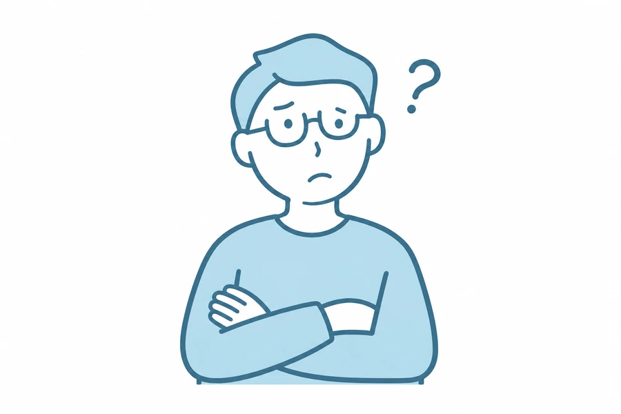

経理業務が時間を
圧迫している
領収書の整理や入力が後回しに。確定申告の時期だけ慌ただしくなるなら、記帳の進め方から見直せます。
税理士をつけるべきか分からなくても、大丈夫です。
個人事業主とは、継続的に事業を営み、事業所得を得ている個人のことです。
ご自身で経理を続けたい方も、記帳から任せたい方も。
よこしま税理士事務所は、お仕事の状況とご希望を伺い、
必要な範囲のサポートを一緒に考えます。
こんな変化が、相談のきっかけです
領収書の整理や入力が後回しに。確定申告の時期だけ慌ただしくなるなら、記帳の進め方から見直せます。

経費の処理、消費税、インボイスなど、調べても判断に迷うことを、ご自身の状況に合わせて相談できます。
独立する、取引が増える、融資や法人化を考える。節目の準備を、税務と会計の面から支えます。
税理士は本当に必要？
依頼すると何が変わる？
今のお仕事や経理の状況を伺い、
必要なサポートを整理します。
ひとりで抱えている実務を、分け合う
一年の数字を、申告につなげる。
所得税・消費税などの申告書作成や、事業の決算書作成に対応します。ご自身でつけた帳簿をもとに、申告だけをご依頼いただくこともできます。
毎月の経理を、続けやすく。
記帳代行から、会計ソフトの導入・使い方の相談まで。ご自身で進めたい部分と任せたい部分を整理し、お仕事に合う経理の形を考えます。
迷ったときに、相談できる安心を。
「この支出はどう扱う？」「税務署から連絡が来た」といった疑問を、ご事情に合わせて整理します。インボイスや消費税についても、まずは現在の状況をお聞かせください。
はじめるときも、次へ進むときも。
開業時の税務書類の作成・提出、経理の準備、融資申請に向けた書類作成を支援します。将来の法人化を考え始めた段階でも、ご相談いただけます。
ご依頼の範囲から選べます
確定申告のみ
帳簿や資料の状況を確認し、決算書・申告書の作成など、必要な業務をご案内します。
継続的な顧問契約
税務相談や決算・申告に加え、記帳代行などを必要に応じて組み合わせます。
個人事業主のお客様へ
取引件数や記帳の状況、ご希望の業務を伺い、
事前にお見積もりします。
20,000円〜
顧問料の約4か月分
※既存の個人向け料金の目安です。記帳代行の有無など、ご依頼内容により異なります。消費税の取り扱いを含む詳細は、お見積もり時にご案内します。確定申告のみの料金、開業初期の費用もご相談ください。
お仕事の内容 ／ 取引の件数 ／ 帳簿・会計ソフトの状況 ／ ご希望の業務範囲
つくば市・土浦市を中心に、小さな会社や個人事業主の皆さまをサポートしています。ご来所・訪問については、ご都合を伺いながらご相談します。
事務所案内・Google マップ ›相談前に、そろっていなくても大丈夫
以下は面談時にあるとお話を進めやすい資料の一例です。必要なものは、ご相談内容に合わせてご案内します。
まずは現在の状況をお聞かせください
お電話・フォームで、ご希望の相談内容をお知らせください。
お問い合わせ→お仕事や記帳の状況を伺い、必要なサポートを整理します。
ご依頼の範囲と料金をご説明し、ご確認後に契約へ進みます。
必要な資料や進め方をご案内し、サポートを開始します。
ご相談の前に
はい。売上の金額だけで判断せず、お仕事の内容や帳簿の状況、困っていることを伺います。開業前・開業直後の段階でもご相談ください。
可能です。現在の記帳状況と申告期限を伺い、必要な業務と料金をご案内します。申告時期が近い場合は、早めにご連絡ください。
ご利用中のソフトやデータの状態をお聞かせください。対応方法を確認したうえで、お客様に合う進め方をご案内します。
はい。取引の内容や登録状況などを伺い、必要な確認事項を整理します。個別の判断は、ご事情を確認したうえでご説明します。
はい、つくば市外からのご相談も可能です。つくば市・土浦市を中心に対応していますが、その他の地域の方もお気軽にご相談ください。
はい。手書きの帳簿やノートでも大丈夫です。普段どのように記録しているかを伺い、今ある記録をもとに、次に何を準備すればよいかお伝えします。
はい。日付順に並べたり、内容ごとに分けたりする前にご相談いただけます。領収書が一部見つからない場合も、通帳やカードの明細など、お手元にある資料から確認できることを一緒に整理します。
はい。申告できていない年が複数あっても、ご相談いただけます。何年分かはっきり覚えていなくても大丈夫です。分かる範囲でお話しいただければ、何から確認するかを一緒に整理します。
はい。同じ口座やカードを使っていても、ご相談いただけます。明細に事業と生活の支払いが混ざっている場合は、どのように確認し、整理していくかをご案内します。
税務・会計のご相談や、業務のご依頼を承っています。
お仕事の状況やお困りごとを、まずはお聞かせください。